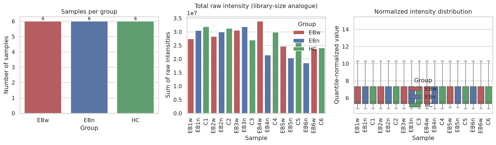

Project · Microarray
GSE171405
RDEB wounds vs intact RDEB skin vs healthy skin
Question
Compare expression in three groups from one public series: RDEB wounds (EBw), intact RDEB skin from the same patients (EBn), and healthy skin.
Notebook 01 loads that series and checks the matrix. Differential expression, pathway enrichment, and signature reversal are later steps.
Dataset
| Accession | GSE171405 on NCBI GEO |
|---|---|
| Platform | Illumina HumanHT-12 v4 microarray (GPL28270 on NCBI GEO) |
| Samples | 18 |
| Probes | 47,323 |
Groups
| Label | Samples | What was profiled |
|---|---|---|
| EBw | 6 | RDEB wound |
| EBn | 6 | Matched RDEB intact skin from the same six patients, EB1–EB6 |
| HC | 6 | Healthy controls, C1–C6 |
Source paper
Onoufriadis A, Proudfoot LE, Ainali C, Torre D, Papanikolaou M, Rayinda T, Rashidghamat E, Danarti R, Mellerio JE, Ma'ayan A, McGrath JA. Transcriptomic profiling of recessive dystrophic epidermolysis bullosa wounded skin highlights drug repurposing opportunities to improve wound healing. Experimental Dermatology. 2022;31(3):420–426. doi:10.1111/exd.14481. PMID: 34694680.
Status
Done Data loading and quality control
Next steps
- Differential expression with a limma-style linear model.
- Pathway enrichment for inflammation, fibrosis, JAK-STAT, extracellular matrix, and cytokine signaling.
- Signature reversal against LINCS/CMap-style resources.
Quality control


Code
The notebook downloads the public GEO files when it runs. Those files are not stored in the repository.